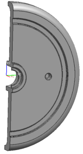

Hide half of the disk
 Edit→Show and Hide→Hide
Edit→Show and Hide→Hide
-
 the left half of the disk.
the left half of the disk.
Note
If necessary, use QuickPick to select the solid body.
-
OK

|
Note |
Your part colors may be different than those shown in this tutorial. |